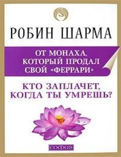

KYHayotni mazmunli va baxtli o'tkazish uchun 101 ta hayotiy dars va tavsiyalar.
Ushbu kitob mashhur yozuvchi Robin Sharma tomonidan yozilgan bo'lib, hayot mazmuni, shaxsiy rivojlanish va baxtli yashash sirlari haqida 101 ta amaliy maslahatni o'z ichiga oladi. Muallif o'quvchini o'z hayotini ongli ravishda boshqarishga, qiyinchiliklarni yengib o'tishga va kelajak avlodga munosib meros qoldirishga undaydi.